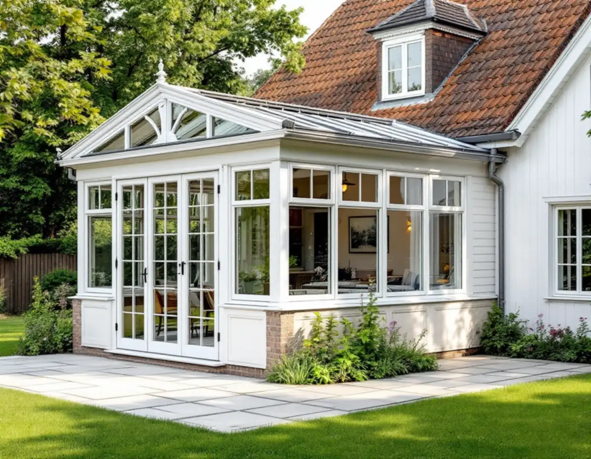
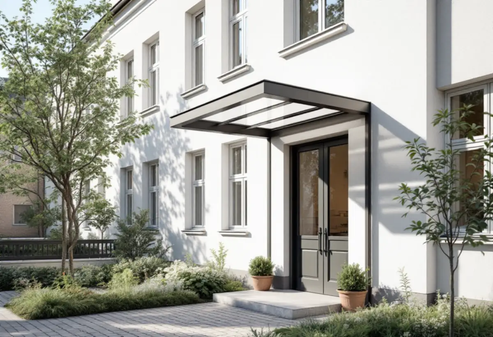
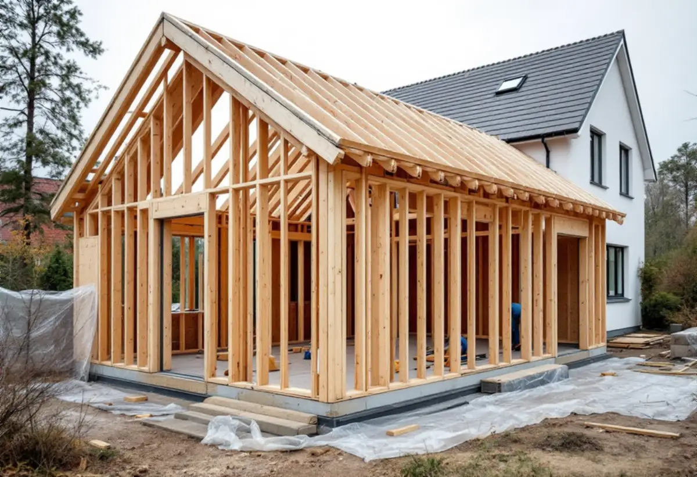

Platsbesök
Gratis besök där vi tittar på huset och tomten.
En tillbyggnad på Kungsholmen kan vara ett uterum på en villa på Stora Essingen eller ett skärmtak på ett föreningshus. Reglerna skiljer sig åt mellan de två. Geal Entreprenad AB ritar och bygger tillbyggnader och tar reda på om du behöver bygglov, anmälan eller ingetdera.

Stockholms stad skriver att en lovfri tillbyggnad får göras på ett en- eller tvåbostadshus, men också på andra byggnader som flerbostadshus. Skillnaden är detaljplanen. På en villa får en lovfri tillbyggnad strida mot planen och till exempel stå på prickmark. På ett flerbostadshus ska den stämma med planen eller vara en liten avvikelse som inte motverkar planens syfte.
Det spelar roll på Kungsholmen, där stadens områdesfakta räknar över 40 000 lägenheter i flerbostadshus men bara några hundra småhus. Vill en förening bygga ett skärmtak över en entré eller låga balkonger mot gården börjar vi därför med planen. För villaägaren är frågan i stället hur huset och tomten påverkas.

Av Kungsholmens 272 småhus med äganderätt ligger 268 på Stora Essingen. Stadens vägledning Varsam utveckling av småhus- och villaområden räknar ön till villastäderna och markerar den som kulturhistoriskt värdefull miljö. Villastäderna beskrivs med individuellt utformade hus där glasverandor och takkupor ger variation.
Vägledningen ber att man tar tillvara eller återskapar karaktärsskapande material, kulörer och detaljer vid ombyggnad. En tillbyggnad på en sådan villa ritar vi därför med samma taklutning, panel eller puts och fönsterindelning som huset, eller som en tydligt underordnad volym. Ligger fastigheten i ett område som pekats ut som särskilt värdefullt krävs bygglov även för det som annars är lovfritt.
En lovfri tillbyggnad får enligt staden vara högst 30,0 kvadratmeter bruttoarea eller öppenarea och inte nå högre än husets taknock. Alla lovfria tillbyggnader på huset räknas ihop, även äldre som en attefallstillbyggnad, ett friggebodsskärmtak eller attefallstakkupor. Har villan redan en sådan är utrymmet mindre än det låter.
Tillbyggnaden ska stå 4,5 meter från tomtgränsen, och närmare krävs ett skriftligt medgivande från berörda grannar med fastighetsbeteckning, situationsplan och underskrifter. Mot gatan är det staden som ska medge. Utan medgivande blir det en bygglovsansökan.
Även när bygglov inte behövs krävs en anmälan och startbesked om tillbyggnaden påverkar husets bärande konstruktion eller brandskydd, eller om den ska få eldstad eller vatten och avlopp. Ett uterum som öppnas mot vardagsrummet genom en ny dörr i en bärande vägg är ett typiskt fall.
Boverket beskriver att byggherren, ofta fastighetsägaren, har det yttersta ansvaret för att lov eller anmälan finns innan arbetet börjar och att kontrollplanen följs. Vi tar fram handlingarna, och när det finns ett startbesked kan bygget börja.
Ett medgivande från grannen ska enligt staden vara skriftligt och innehålla fastighetsbeteckning, vilken åtgärd det gäller, en situationsplan med avståndet till gränsen och underskrifter från berörda grannar. Det ska kunna visas upp om byggnadsnämnden gör tillsyn, så vi tar fram situationsplanen som grannen skriver under.

Gratis besök där vi tittar på huset och tomten.
Detaljplan, klassning och tidigare lovfria tillbyggnader.
Tillbyggnaden ritad i husets material och taklutning.
Medgivanden, anmälan eller bygglov efter behov.
Grund, stomme, tak och anslutning mot huset.
Kontrollplanen följs upp och arbetet avslutas.
Skatteverket räknar en tillbyggnad av ett småhus som rotarbete när någon av dess sidor sitter ihop med husets yttervägg till minst 75 procent eller när en dörr förbinder tillbyggnaden med huset. Huset ska vara äldre än fem år och det mesta av den ursprungliga stommen ska vara kvar.
Avdraget gäller arbetskostnaden, högst 30 procent och högst 50 000 kronor per person och år. Ett skärmtak eller balkonger på ett föreningshus betalas av föreningen och ger inget rotavdrag. Där avdraget gäller drar Geal det direkt på fakturan.
Storlek och grundläggning, om en bärande vägg öppnas, hur taket ansluter, fönster och glas i ett uterum och om bygglov och ritningar för en kulturmiljö behövs. Efter ett gratis platsbesök får du ett skriftligt kostnadsförslag.
Mer boyta i samma hus.
Tillbyggnad →Takbyte, takbesiktning och plåtarbeten.
Takläggare på Kungsholmen →Plåttak i stenstaden och funkis i Fredhäll.
Takrenovering på Kungsholmen →Gårdshus vid villorna på Stora Essingen.
Attefallshus på Kungsholmen →Stambyte, stämmobeslut och 30-talshus.
Badrumsrenovering på Kungsholmen →Föreningens stambyte.
Byggföretag på Kungsholmen →Målning av puts och gårdsfasader.
Fasadmålning på Kungsholmen →Slätputs på funkishus, lagad utan synliga skarvar.
Fasadrenovering på Kungsholmen →Stenhusen, funkishusen och bygglovet.
Fönsterbyte på Kungsholmen →Fönstret i bostadsrätten, insida och beslag.
Fönsterrenovering på Kungsholmen →Stegljud, golvval och styrelsens tillstånd.
Golvläggare på Kungsholmen →Slipa och lacka golvet i bostadsrätten.
Golvslipning på Kungsholmen →Fläkten, kanalen och föreningen.
Köksrenovering på Kungsholmen →Funkislägenheter, stadgar och ROT i bostadsrätten.
Målare på Kungsholmen →Huvar, skorstenar och genomföringar.
Plåtslagare på Kungsholmen →Förvaring och platsbyggt i små lägenheter.
Snickare på Kungsholmen →Villorna på Stora Essingen.
Takbyte på Kungsholmen →Ny tapet på putsade lägenhetsväggar.
Tapetsering på Kungsholmen →Hela lägenheten från golv till tak.
Totalrenovering på Kungsholmen →